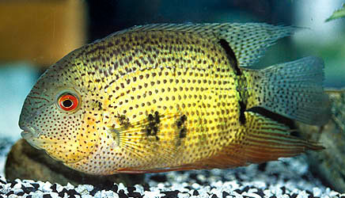

Systématique
- Ordre : Cichliformes
- Famille : Cichlidae
- Genre : Heros
- Espèce : H. notatus
- Auteur : Jardine, 1843

Heros notatus est un cichlidé sud-américain majestueux, souvent confondu avec Heros severus. Il se distingue par un corps haut, comprimé latéralement et de forme presque discoïde. Sa coloration est particulièrement attractive : un fond olive à argenté parsemé de nombreux points sombres (mouchetures) sur la partie inférieure du corps et les opercules.
À l'âge adulte, il peut atteindre une taille de 20 à 25 cm. Il présente des barres verticales sombres qui s'estompent avec l'âge, à l'exception de la barre située à la base de la queue et celle passant par l'œil, qui restent souvent visibles. Les nageoires dorsale et anale sont longues et se terminent en pointe chez les sujets matures.
C'est un poisson territorial mais relativement paisible pour un cichlidé de cette taille, surtout en dehors des périodes de reproduction. Heros notatus gagne à être maintenu en couple ou en petit groupe dans un volume conséquent. Il occupe principalement les strates médianes de l'aquarium.
En aquarium, il nécessite un décor composé de racines de tourbière et de grosses pierres créant des cachettes et des limites visuelles. Bien qu'il soit moins destructeur que certains autres grands cichlidés, il peut s'attaquer aux plantes tendres. Il est conseillé de privilégier des plantes robustes comme les Anubias ou les Microsorum fixées sur le décor.
Mode : Ovipare, pondeur sur substrat découvert.
Le couple nettoie soigneusement une surface plane (généralement une pierre ou une racine) pour y déposer les œufs. La ponte peut compter plusieurs centaines d'œufs. Les deux parents assurent la protection et la ventilation du site de ponte avec une grande détermination.
L'éclosion survient après environ 3 jours. Les parents déplacent ensuite les larves dans de petites cuvettes creusées dans le sable jusqu'à la nage libre. Les alevins acceptent immédiatement les nauplies d'artémias. Une particularité du genre Heros est que certaines populations pratiquent l'incubation buccale larvaire, bien que cela soit moins systématique chez H. notatus que chez H. severus.
Dimorphisme sexuel : Difficile à établir chez les juvéniles. Chez les adultes, le mâle est généralement plus grand et possède des mouchetures sombres plus denses et plus étendues sur la tête et les opercules. Les nageoires dorsale et anale sont plus effilées chez le mâle.
Espérance de vie : 10 à 15 ans en aquarium.
Originaire du bassin de l'Amazone, on le trouve principalement dans le bassin du Rio Negro (Brésil) et du Rio Orénoque (Venezuela/Colombie). Il fréquente les zones d'eaux calmes, les bras morts et les forêts inondées (igapós).
Son habitat naturel est souvent caractérisé par des "eaux noires" (blackwater), acides et très douces, chargées en tanins issus de la décomposition des matières organiques. Il s'abrite fréquemment parmi les racines et les branches d'arbres immergés.
Répartition

Origine naturelle :
- Brésil : Bassin du Rio Negro.
- Venezuela et Colombie : Bassin du Rio Orénoque.
- Guyanes : Bassins fluviaux côtiers.
Statut UICN : Non évalué, mais l'espèce est largement répartie dans les réseaux hydrographiques sud-américains.
Paramètres de maintenance
Température : 26 à 30 °C.
pH : 5,0 à 7,0 (Eau acide préférée).
GH : 1 à 10 °dGH (Eau douce indispensable).
Courant : Faible.
Volume conseillé : Minimum 400-500 L pour un couple formé.
Régime alimentaire
Régime : Omnivore.
Dans la nature, il consomme des fruits, des graines, des insectes et de petits crustacés.
En aquarium, il est peu exigeant et accepte les granulés de qualité, les nourritures surgelées (artémias, mysis, vers de vase) ainsi que des apports végétaux (épinards pochés, pois, spiruline) qui sont essentiels à son équilibre.